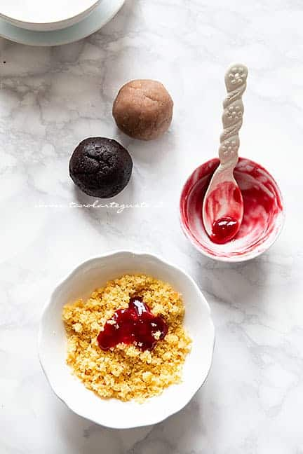
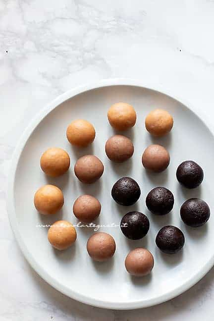
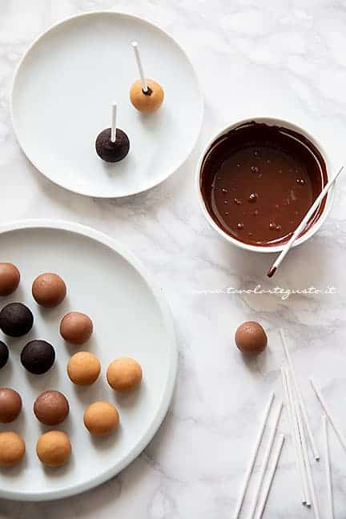
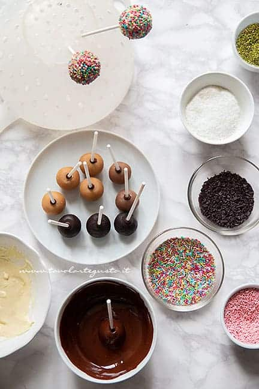
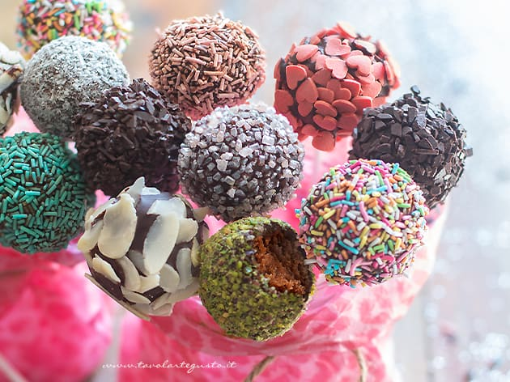

Cake pops sono nati in America poco più di un decennio fa dall’idea di “riciclare” gli avanzi di pasticceria
che non venivano usati.
A rendere popolari le palline fu proprio l’idea originale di conficcarle negli stecchini.
Sembra sia stata Bakerella, regina dei biscotti e muffin decorati, a diffonderne la moda nel web. E così dal 2009 iniziano a diffondersi stampi per cake pops, bastoncini, kit e libri su come realizzarli.
Ricetta
| Difficoltà | Facile |
| Tempo di preparazione | 30 Minuti |
| Tempo di cottura | senza cottura |
| Porzioni | 20 Pezzi |
| Metodo di cottura | senza cottura |
| Cucina | Americana |
Ingredienti
Per la base
- 300 – 400g Pan di spagna (oppure avanzi di torta, ciambelle, muffin, panettone, pandoro, dolci secchi, biscotti ect )
- 1 cucchiaio abbondante di Marmellata di albicocche o gusto a scelta per ogni 100g di torta
- 1 cucchiaio abbondante di Nutella per ogni 100g di torta
- 300g Cioccolato fondente oppure cioccolato bianco o al latte
- Bastoncini
Per decorare
- Granella di pistacchi, nocciole, noci
- Farina di cocco
- Codette di cioccolato
- Zuccherini colorati
- Mandorle a lamelle
Preparazione dei Cake Pops
Impasto
Prima di tutto scegliete sbriciolate la base con cui volete realizzare i cake pops. In questo caso ho diviso l’impasto
in 3 ciotole da 100 gr ciascuna.
La prima con la nutella la seconda con marmellata di albicocche, la terza con quella di fragole.
Impastando ogni contenuto ho ottenuto 3 gusti diversi.
Impastate bene fino ad ottenere un impasto compatto che
sta insieme senza sgretolarsi.
Se l’impasto lo richiede, potete aggiungere un altro pizzico di marmellata o nutella.

Formazione Pallina
Da ogni impasto ricavate delle palline di circa 3 cm di diametro. Arrotolatele con le mani così come si fa con le polpette.

Riponete in freezer per 10 – 15 minuti oppure in frigo 1 h.
Il riposo in frigo è fondamentale perchè si attaccheranno immediatamente i bastoncini con la punta di cioccolato fuso.
Dunque le palle devono risultare fredde e dure.
Nel frattempo sciogliete il cioccolato a bagno maria fino ad ottenere un composto lucido e liscio.
Quando le palline sono fredde, immergete 1 cm di bastoncino nel cioccolato fuso e subito infilzate il cake pop di 1 cm.
Man mano che li realizzate riponeteli in piatto da portata. Riponete quindi in frigo a rassodare per ancora 30 minuti.
Nel frattempo riponete il cioccolato in caldo e preparate le decorazioni.

Decorazione
Immergete ogni pallina delicatamente nel cioccolato; roteando leggermente e appoggiandovi al lato della
ciotola fate scivolare lentamente il cioccolato in eccesso.
Solo una volta colato il cioccolato in eccesso, immergete il cake pops nella ciotola dei confetti o granella.
Roteate ma non eccessivamente. Aiutatevi con le mani a decorare tutte le palline.
Una volta decorati i cake pops metteteli ad asciugare in un semplice cola pasta, utilizzando i buchi stretti
per fare pressione.

Una volta che i Cake pops sono asciutti potete servirli.

Conservazione
Possono stare a temperatura ambiente per un’intera giornata, poi meglio riporli in frigo, dove conservano tono, forma e fragranza.